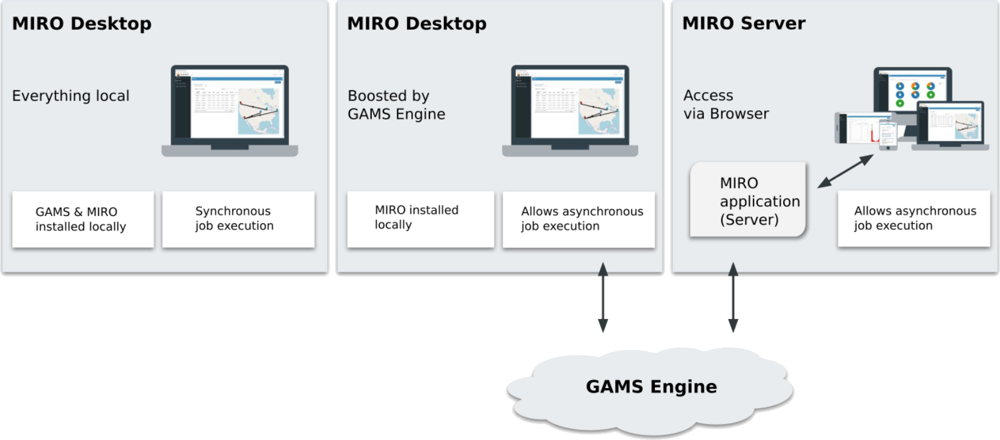
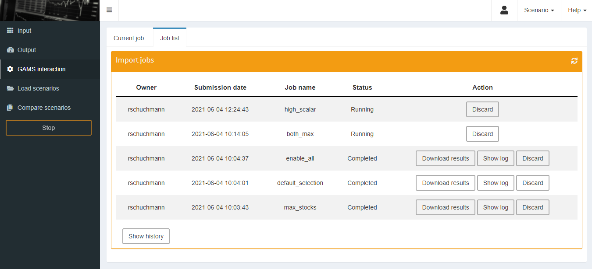
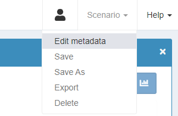
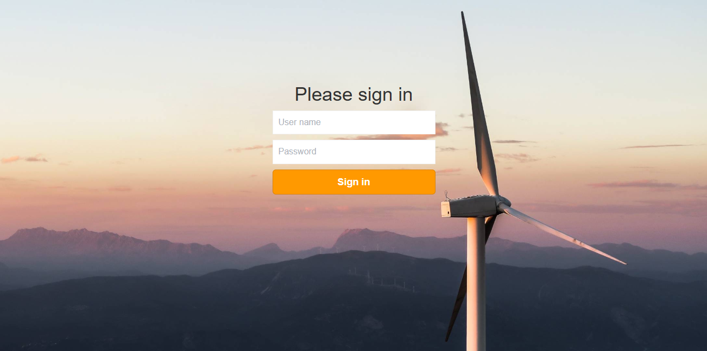
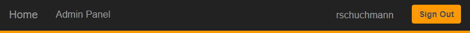
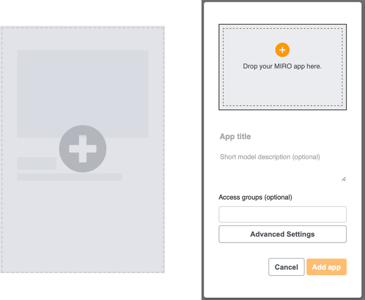

Both GAMS MIRO Desktop - boosted by GAMS Engine and GAMS MIRO Server make use of GAMS Engine, which must be purchased separately. Please contact sales@gams.com if you are interested in one of these setups.
GAMS MIRO Server
Introduction
In the most basic setup - GAMS MIRO Desktop - both the MIRO application and GAMS itself are installed on the same computer and run exclusively on this machine. But MIRO is not limited to this setup: You can run your MIRO applications locally, but solve the GAMS jobs in the cloud. We call this setup GAMS MIRO Desktop - boosted by GAMS Engine. GAMS Engine is a server software that allows you to run GAMS models on centralised compute resources. It uses state-of-the-art technology to handle the entire job management, scheduling and load balancing of your computationally intensive optimization problems.
GAMS Engine is also used for GAMS MIRO Server. This setup allows you to run both the GAMS execution engine as well as the MIRO application itself in the cloud. Your optimization applications can then be accessed from any device with a modern web browser like a PC, smartphone or tablet.

Note:
GAMS MIRO Desktop - Boosted by GAMS Engine
With GAMS MIRO Desktop - Boosted by GAMS Engine, you can solve GAMS jobs in the cloud with your locally running MIRO applications. This setup requires GAMS Engine (read more about the installation of GAMS Engine here). To switch from running your optimization jobs on your local machine to solving them in the cloud, open your MIRO library, go to Preferences → General and check the "Execution of models on GAMS Engine" checkbox. This setting affects all deployed MIRO apps (started via the MIRO library) and all MIRO apps in development (started via GAMS Studio or the command line).

If you are a developer and want to use a not yet deployed MIRO app with Engine, you need to create the model assembly file first. With this you tell MIRO which files belong to the GAMS model. This is primarily the main model file, but also all files necessary to calculate all inputs and outputs, e.g. files that are included in the model. Read more about the model assembly file here.
The next time you launch a MIRO application, a login dialog appears. To connect to GAMS Engine, the following information is required:
- Engine URL: URL where GAMS Engine is hosted, e.g. http(s)://mydomain.com/engine/api.
- Username & password: Your GAMS Engine credentials. More about the user management of GAMS Engine can be found here.
- Namespace: The namespace to solve the model in. Engine uses these namespaces to organize GAMS models. Your user account needs at least execute permissions on the namespace to run a registered model, or write and execute permissions to run an unregistered model. Further information can be found here.
- Is your model registered in the namespace: If a model is registered in an Engine namespace, the model files are stored on Engine. This avoids having to send the same model files to Engine for each job you submit. Only the scenario data is communicated in this case. Read more here.
- Remember me: Your credentials will be saved so that you will not have to log in again the next time you start the application.
GAMS MIRO Server
With GAMS MIRO Server, not only the model calculations but also the MIRO apps themselves are moved to the cloud. Apps deployed with MIRO Server can be accessed from any device with a modern web browser. Local MIRO or GAMS installations are no longer necessary. This makes MIRO Server the most convenient solution when it comes to making apps available to end users all over the world. All you need as a user is a URL, valid credentials (optional) and you are ready to go.

Besides the benefits of making them easily accessible, central hosting of MIRO apps also brings other aspects into focus:
- Asynchronous solving: Submit jobs and log back in later to get the results.
- Scenario sharing: Share scenarios of your MIRO application(s) with other users easily from within the app.
- User- and group management: Map structures of your work environment by dividing MIRO users into groups with different privileges. Decide who can see which apps and/or who has control over adding new ones.
- App updates: Update MIRO apps without the risk of interrupting running applications.
Asynchronous Solving
Jobs that are solved with GAMS Engine in the cloud are always processed asynchronously. This has the following advantages:
- You can submit several jobs in a row without having to wait for the results of previous jobs.
- A MIRO application does not have to keep running during the calculations, i.e. you can close the application and return at a later time to view the results.
- Solve model:
The workflow is identical to the synchronous solving in MIRO Desktop. After clicking on Solve model the view changes to the GAMS interaction section, where log and listing files are shown during the calculations (if they are not hidden). After solving the view changes to the output section.
Note that unlike MIRO Desktop, the job is now executed asynchronously. You can therefore close the MIRO app during the calculations. From the moment you log out and log back in, the job will be treated as a job that you submitted by clicking submit job rather than solve model. This means no log will be displayed anymore in the GAMS interaction section. Also, the results are not loaded automatically after solving. Instead the job is moved to the job list. From there you can get the results after finishing the calculations.
- Submit job: A submitted job is put directly into the job list. No log is displayed, and results are not automatically loaded into the interface. Instead, the results can be imported later. Submitting a job in this way makes sense especially if you want to solve multiple jobs in a row without waiting for the results to come in.
Job list
The job list in the GAMS interaction section lists all submitted jobs that are still running or whose results have not yet been imported. It shows for each submitted job the owner, the submission date and the specified job name. In addition, the current status (scheduled, running or completed) is visible.

Results that have not yet been imported or are still pending can be discarded. As soon as a job has finished, the results can be loaded into the sandbox with a click on Download results. Note that this does not save a scenario in the database.
If you want to see jobs that previously have been imported or discarded, you can do so by clicking on Show history:

Scenario Sharing
Rules for scenario sharing
If several users have access to the same MIRO Server app, they can share scenarios. Shared scenarios can be loaded from the database into the sandbox in the same way as your own scenarios.

- Scenarios can be shared with individual users and/or with user groups.
- Scenarios can only be shared with groups or users of a group in which you are a member yourself. Inviters can also see users in groups of invitees of which they themselves are not members. Admins can see all users and groups.
- The user who shares a scenario with others is the scenario owner. The scenario owner is displayed to other users when they load a shared scenario into their sandbox.
- Scenarios can be stored under the same name in the database if the owner is different.
- Access permissions are assigned to a shared scenario. As scenario owner you decide about who has read, write and/or execute permissions. Users with read permissions can load the owner's scenario but are not authorized to edit or execute it. The scenario is marked with a lock symbol (). Write permissions give you the right to change the scenario (data) and save it again. With execute permissions you are authorized to solve the scenario.
- It is not possible to revoke the owner's access permissions.
- Users with read access can duplicate the scenario via the "Save as" button. They become the owner of this new scenario.
- For the time a scenario is opened in MIRO, it is locked for other users. This prevents conflicts arising when a scenario is used concurrently. Locked scenarios can be opened in readonly mode by others (and also saved under a new name). A lock symbol () next to the scenario name indicates the readonly status. Users with write permissions for the scenario are additionally informed about this via a notification in the lower right corner of the screen.

Share a scenario
The information about whether a scenario should be shared with others is controlled in the 'Access permissions' tab under Scenario → Edit metadata.

In the example below, Rebecca is scenario owner. She gives the single user 'rschuchmann' and the group 'group 1' read permission for her scenario. Since she does not want her scenario data to be changed, she decides not to give write permissions to any other user. Members of 'group 1' usually only look at results and do not want to start optimization runs. Therefore, Rebecca only grants execution rights to "rschuchmann".

GAMS MIRO Server - Administration
Server Setup
Note:
The following instructions refer exclusively to the installation and configuration of GAMS MIRO Server. The corresponding steps have to be performed on the server used for this purpose. Please make sure that you have installed GAMS Engine before proceeding with the installation of GAMS MIRO Server.
Install MIRO Server
To install MIRO Server, first download the ZIP file that contains everything you need to get started here.
The general installation instructions are given below. However, keep in mind that the installation is highly dependent on your setup. The setup of GAMS MIRO Server should typically be performed by a system administrator. If you have problems with the installation, please do not hesitate to contact us by mail at support@gams.com.
- Install Docker from https://docs.docker.com/engine/install/. Start Docker afterwards. We further recommend to configure Docker to start on boot. To use the Docker CLI without sudo, you must add your user to the docker group.
- Install Docker Compose from https://docs.docker.com/compose/install/.
- Extract miro_server.zip. This will create a subfolder miro_server.
- Open a terminal and cd into that folder.
Tip:
GAMS MIRO applications will later be stored at this location.
- In case MIRO Server and GAMS Engine run on the same machine: Get the IP of the docker0 network interface via: sudo ip addr show docker0 |grep -Po 'inet \K[\d.]+'. You will need this IP in the next step.
Install MIRO Sever by running ./miro-server install. You will be asked to enter the GAMS Engine host and the namespace to be used by MIRO Server.
- If MIRO Server and GAMS Engine are running on the same machine, enter for the host: http://<IP extracted from previous step>/<engine location>/api (engine location is root/empty per default). If you specified a port when installing GAMS Engine, this port must also be specified here: http://<IP extracted from previous step>:<engine port>/<engine location>/api.
- If GAMS Engine is running on a separate machine, enter the URL here, e.g. http(s)://mydomain.com/api.
The default namespace is global. You can also specify any other namespace created in GAMS Engine. You can change the GAMS Engine connection info at any time by modifying the auto-generated .env file that is located inside the miro_server directory. The following environment variables have to be set:
Note that MIRO Server must be restarted if the .env has been changed.Environment Variable Name Environment Variable Value Example GMS_MIRO_ENGINE_HOST IP adress and port/DNS of Engine https://mydomain.com/api GMS_MIRO_ENGINE_NS Engine namespace to be used by MIRO Server miro_server You will also be asked whether you want to use MIRO Server with or without authentication service, i.e. whether users have to log in with an existing GAMS Engine account (default) or whether everyone with the valid URL should have free access to the app(s). Read more about the user management in the section Authentication and User Management.
The installation script will inform you whether the installation was successful or not.
Warning:
We strongly recommend to use MIRO Server on a Linux server in a production environment!
- Install Docker from https://docs.docker.com/engine/install/ (note the system requirements). Start docker afterwards. We further recommend to configure Docker to start on login.
- Extract miro_server.zip. This will create a subfolder miro_server.
- Open a terminal and cd into that folder.
Tip:
GAMS MIRO applications will later be stored at this location.
Install MIRO Sever by running miro-server.cmd install. You will be asked to enter the GAMS Engine host and the namespace to be used by MIRO Server.
- If MIRO Server and GAMS Engine are running on the same machine, enter for the host: http://host.docker.internal/<engine location>/api (engine location is root/empty per default). If you specified a port when installing GAMS Engine, this port must also be specified here: http://host.docker.internal:<engine port>/<engine location>/api.
- If GAMS Engine is running on a separate machine, enter the URL where it can be reached, e.g. http(s)://mydomain.com/api.
The default namespace is global. You can also specify any other namespace created in GAMS Engine. You can change the GAMS Engine connection info at any time by modifying the auto-generated .env file that is located inside the miro_server directory. The following environment variables have to be set:
Note that MIRO Server must be restarted if the .env has been changed.Environment Variable Name Environment Variable Value Example GMS_MIRO_ENGINE_HOST IP adress and port/DNS of Engine https://mydomain.com/api GMS_MIRO_ENGINE_NS Engine namespace to be used by MIRO Server miro_server You will also be asked whether you want to use MIRO Server with or without authentication service, i.e. whether users have to log in with an existing GAMS Engine account (default) or whether everyone with the valid URL should have free access to the app(s). Read more about the user management in the section Authentication and User Management.
The installation script will inform you whether the installation was successful or not.
Start / Stop / Update / Uninstall
This section assumes a Linux operating system. On Windows, ./miro-server must be replaced by miro-server.cmd in the commands, e,g, miro-server.cmd start.
StartOnce you have GAMS MIRO Server installed, you can launch it via
> ./miro-server start.
GAMS MIRO Server will now listen on port 8080. You can log in with any GAMS Engine user that has at least execute permissions on the namespace provided. To directly access a MIRO application that has been added to MIRO Server, go to /app_direct/<appId>, where appId is the lowercase name of your main gms file per default.
Stop
To stop a running instance of GAMS MIRO Server, run
> ./miro-server stop
Restart
To perform a restart, run
> ./miro-server restart
Note that if you make changes to the docker-compose.yml file these changes are not reflected after running this command. In such a case do a ./miro-server stop and ./miro-server start.
Update
To update GAMS MIRO Server to the latest version, run
> ./miro-server update
Note that this will pull new images from Docker Hub and launch them. If you only want to pull new images, run > ./miro-server pull
Uninstall
To remove GAMS MIRO Server including all data associated with it from your server, run
> ./miro-server uninstall
Additionally, you can remove the directory where you extracted the configuration files of the GAMS MIRO Server.
Customize MIRO Server
After setting up MIRO Server, some basic configurations can be made. This includes, among other things, setting a logo for the login screen or adjusting the authentication method.
Most of the settings can be done in the data/application.yml file in the miro_server directory. Note that you must stay with the file's YAML format. It is also important that no adjustments are made to the file other than the following settings. Changes directly affect the functionality of MIRO Server!
application.yml example
The following settings can be made in the data/application.yml file:
- Title (proxy.title):
Sets the title that is visible in the browser tab. - Language (proxy.miro-lang):
With this setting you can set the global language for all deployed MIRO apps. Currently, the languages available are English ('en'), Chinese ('cn') and German ('de'). This global language setting initially applies to all apps. You can still set a different language individually for each app, which overrides the global setting. This allows to host apps in different languages. Read more about how to change the language for an individual app.
- Authentication method (proxy.authentication):
When you set up MIRO Server as a server administrator, you can choose to use the service with or without authentication. This decides whether anyone with access to the MIRO Server URL is allowed to access the MIRO apps, or whether GAMS Engine credentials are used. In the data/application.yml file you can change this setting. The following options are available:- proxy.authentication: webservice: GAMS Engine authentication
- proxy.authentication: none: No authentication
- Context-path (server.servlet.context-path):
If you want to host MIRO Server on a different path than root, you must adjust the context path under server.servlet.context-path. For example, if you want to access the MIRO apps at https://mydomain.com/miroapps, then the context-path must be set to /miroapps. Beside the adjustment of the path in the application.yml file, the configuration of the reverse proxy (Nginx: location property) has to be adjusted as well.
Note that when using MIRO Server without authentication, an anonymous GAMS Engine user with at least execute permissions on the used namespace must be created. The credentials of this user must be provided in the .env file in the miro_server directory. More about this here.
Other settings:
- Logo:
In addition to the settings in the application.yml, the logo that is displayed in the login screen can also be customized. To change the logo, replace the logo.png and logo.svg under data/img/ in the miro_server directory. - Color styles:
The CSS styles of MIRO Server can be customized. For example, you can use predefined company colors in the login and overview screen:
For this purpose, a custom CSS file must be provided when MIRO Server is started. To do this, create a new directory 'CSS' under miro_server/data, where you put the custom CSS (e.g. miro_server/data/css/styles.css). Now specify this style sheet in the docker-compose.yml file under 'volumes':
ports: - 8080:8080 volumes: + - ./data/css/styles.css:/home/miroproxy/templates/2col/assets/css/styles.css - ./data:/home/miroproxy/dataThe path before the colon (./data/css/styles.css) points to the custom CSS file. The second path must not be changed.
The default stylesheet used by MIRO Server can be found here.
Note:Note that the styles only affect MIRO server components and not the MIRO applications themselves!
All changes will take effect after a restart of MIRO Server. If you make changes to the docker-compose.yml configuration you need to do a ./miro-server stop and ./miro-server start.
Extending the MIRO Docker image
In case your MIRO applications need additional packages, you have to extend the MIRO UI Docker image. You can do so by adding the additional packages required by your custom renderers to the file additional_packages located inside the miro_server directory. Each package name must be on a new line. Once all packages are added to this file, run
> ./miro-server build
(on Windows miro-server.cmd build). Please note that additional packages may cause version conflicts with packages used internally by MIRO. We therefore recommend keeping the number of additional packages to a minimum.
Nginx example configuration
We suggest to run GAMS MIRO Server behind a reverse proxy such as nginx. You can find an example configuration in the file miro.conf located inside the miro_server directory mentioned in the installation instructions. To apply this configuration, simply copy it to the configuration location of your nginx (e.g. sudo cp miro.conf /etc/nginx/conf.d/). Note that you will have to reload nginx afterwards using sudo nginx -s reload.
Hosting GAMS Engine and MIRO Server on the same hostWhen you are hosting MIRO Engie and MIRO Server on the same host, you have to merge the nginx configurations of both GAMS Engine and MIRO Server. A resulting /etc/nginx/conf.d/miro.conf could look as follows:
Nginx example configuration
Note that even though both GAMS Engine and MIRO Server run on the same host, the GAMS Engine host is not localhost. In case TLS, port/certificate info etc. is used, this needs to be added here as well. If you need help with this, please contact us. Nginx needs to be reloaded if the configuration has been changed: sudo nginx -s reload.
If you want to host MIRO Server on a path other than root, you must change the context path in the file data/application.yml accordingly (entry server.servlet.context-path).
Running under SELinux
Note that with SELinux active (e.g. CentOS/RHEL), you might have to allow your nginx server to proxy to the upstream MIRO Server host. You can do so by running: setsebool -P httpd_can_network_connect 1.
User Management
MIRO Server uses the authentication service of GAMS Engine. Everyone who wants to use MIRO Server needs a GAMS Engine user account with at least execute permissions on the namespace to be used. Or the other way around: Once you are a registered GAMS Engine user with the required permissions, you can use MIRO Server.
If you are GAMS Engine administrator or inviter, you can manage users and namespaces for MIRO Server directly in the Engine UI. Read more about this in the GAMS Engine documentation.
If you decide to use MIRO Server without authentication (e.g. to showcase applications as in the case of the MIRO Gallery), you need to register one GAMS Engine user with execute permissions on the namespace to be used, e.g. a user anonymous. Anyone accessing your MIRO apps will then use this GAMS Engine user under the hood for authentication. You will need the credentials of that user in step 6 of the installation. You can also provide the credentials of this user via the `.env` file in the miro_server directory:
| Environment Variable Name | Environment Variable Value | Example |
|---|---|---|
| GMS_MIRO_ENGINE_ANONYMOUS_USER | Username of anonymous user | miro_server_anonymous |
| GMS_MIRO_ENGINE_ANONYMOUS_PWD | Password of anonymous user | t@qHwt%3Mh |
The admin panel
Access
In the Admin panel of MIRO Server you can add new MIRO apps and delete existing ones. Among other things, access to individual apps can also be controlled here via a user group system.
A user with read, write and execute permissions on the namespace that MIRO Server uses will be considered as a MIRO Server administrator. As an administrator, the tabs 'Admin Panel' and 'Containers' are additionally displayed next to the 'Home' tab:

A click on Admin Panel opens a overview with all deployed apps:

Add apps
As with the local MIRO Desktop library, a new MIRO app (miroapp file) can be added easily via drag & drop or by clicking on the last tile:

The dialog that opens shows a preview of the deployed app including logo, title and description, which can be modified. Note that the maximum file size for the logo is 1 mb.
Further settings that can be made before adding the app:
- Access groups (optional):
By default, any Engine user who has access to the namespace used by MIRO Server can see all apps. To limit who is allowed to use the app you want to add, you can optionally assign access groups. A user who is not a member of one (or more) of the assigned access groups does not see the app in the app overview and cannot reach it via direct link (see an example). All GAMS Engine groups of the namespace used by MIRO Server in which the MIRO administrator is a member or has access rights are available for selection. Learn how to create groups and add users in GAMS Engine. - App environment (JSON, optional):
Here you can define a customized environment to be used by the MIRO app in JSON syntax. This can be useful/mandatory, for example, if you want to run custom analysis scripts that require external software not in the PATH or to store credentials to be used by remote data exchange modules. A detailed description including an example can be found in the MIRO Desktop documentation. The only difference to the local version is that with MIRO Server you can specify a separate environment for each app, while with MIRO Desktop this applies globally to all apps.
While the global language setting applies to all apps, the app environment can be used to change the language of an individual app. This allows the use of apps in different languages within one MIRO Server instance. The environment variable MIRO_LANG specifies the language. Available languages currently are English ('en'), Chinese ('cn') and German ('de'). Example: {"MIRO_LANG":"de"}.

Scenario data: All scenarios that are bundled with the app are stored in the MIRO Server database. The user who adds the app will become the scenario owner. All users with access to the app have read and execute permissions for these scenarios.
Edit and remove apps
Edit apps: You can edit existing apps by clicking on an app tile. This opens the same dialog as when you add a new app.
Remove apps: To remove an app, click on the × icon in the upper right corner of an app tile. If you want to keep the database with all the scenario data of the app you want to delete, you can specify this in the following step.
Add scenario data
Besides the possibility to bundle scenario data with an app, scenarios can also be added afterwards using the 'Add MIRO scenarios' box:

- Scenarios must be in miroscen format.
- Only one scenario can be added at a time.
- The scenarios must match a MIRO app that is already deployed on MIRO Server.
- Scenarios are assigned to the user who adds them.
- The scenarios are made available (read and execute permissions) to all users who have access to the app.
Access MIRO apps
MIRO Server library
The landing page of MIRO Server shows the MIRO Server library. It lists all apps that a user has access to and is very similar to the app library of MIRO Desktop. Each app is displayed in a separate tile and can be launched from there:
Direct links
In addition to the app overview of the MIRO Server library, apps can also be accessed via a direct link. There are two slightly different variants. In both variants the app id is part of the link. This id is by default the lowercase name of the main GAMS (.gms) file.
- <miro_server_url>/app/<app_id> (e.g. https://miro.gams.com/gallery/app/transport/):
When accessing a MIRO app under this link, the app itself will be available via an iframe. The top of the page contains the navigation bar which brings you back to the landing page of MIRO Server (library). - <miro_server_url>/app_direct/<app_id> (e.g. https://miro.gams.com/gallery/app_direct/transport/):
Directly access the MIRO app without the iframe and navigation bar.Info:Within the iframe that is displayed under /app/<app_id>, the /app_direct/<app_id> link is used to display the MIRO app.
Controlling app access
If several MIRO apps are used, it may make sense to make certain apps accessible only to certain users. There are two possible ways to do this.
User Groups
In GAMS Engine users can be assigned to groups (read more about user groups in the GAMS Engine documentation). These groups can be used to control who can see which MIRO app hosted on MIRO Server. In the following example, there are three groups A, B and C. Users in group A have access to 4 apps, users in group B have access to 3 other apps. Group C users can access 2 apps, one of which is also used by another group.
Tip:
A user can also be a member of multiple groups.
Multiple MIRO Server instances
In this approach, users are separated from each other not by groups, but by separate MIRO Server instances. The example setup is as follows: There are 3 different MIRO Server instances, each accessible under a different URL. The MIRO server instances all access the same GAMS Engine instance, but use different namespaces. Using groups is of course still possible, but not necessary in this example.

Note:
Note that in this setup it is not possible to share individual apps with multiple groups. Apps have to be added and maintained separately in each MIRO Server instance. Except that they use the same GAMS Engine, the three instances have nothing to do with each other.